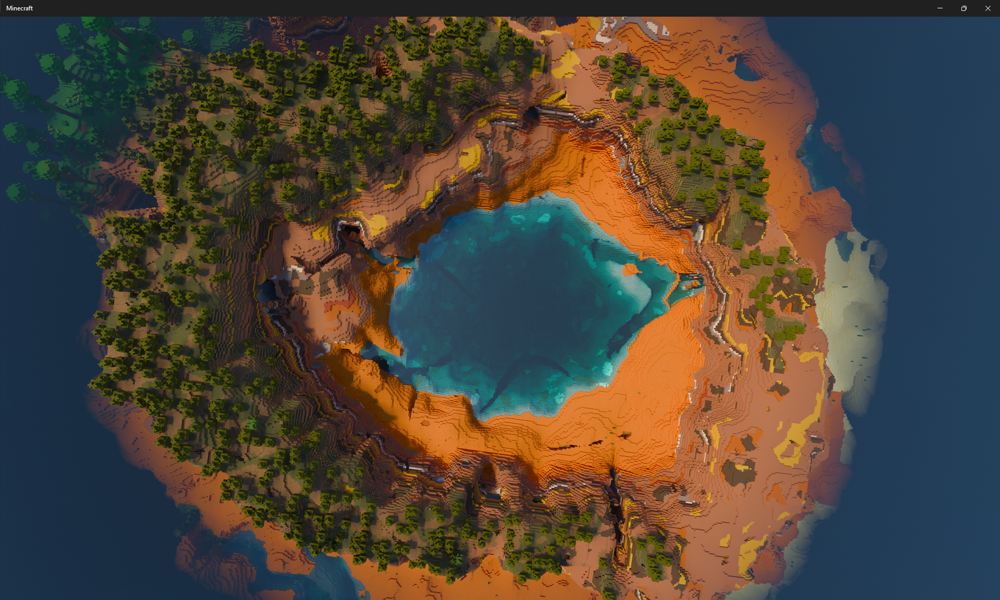
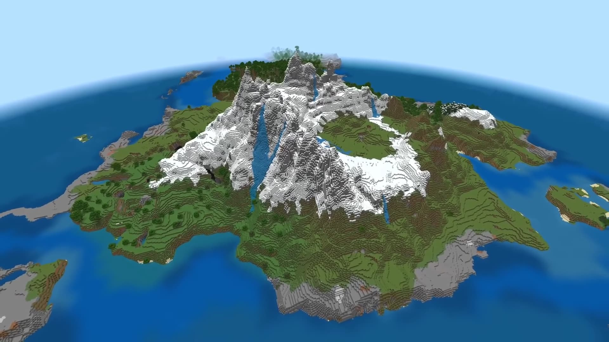
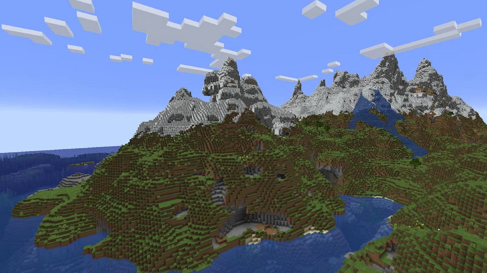
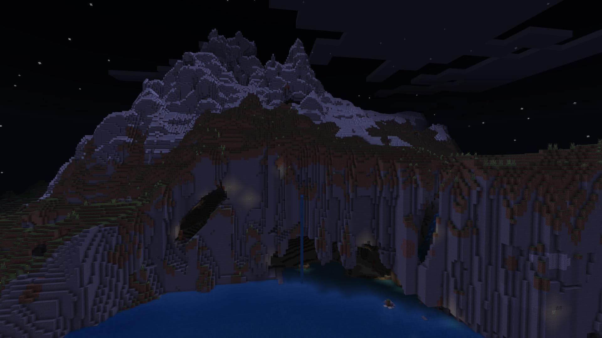

1.
Seed -12356864305963
Se ami esplorare il mondo di Minecraft e cercare tesori nascosti in luoghi diversi, allora questo è uno dei migliori semi di Minecraft che potresti scegliere. Ti permette di esplorare molte altre isole e trovare tesori e bottini nascosti. Avrai tanti fantastici oggetti da cercare e utilizzare su queste isole. Questi includono pepite d'oro, spade di ferro, tuniche incantate, lingotti d'oro e molto altro. Oltre alle isole, troverai anche dei relitti di navi pieni zeppi di forzieri e tesori nascosti. Puoi anche trovare le mappe dei tesori sepolti su queste navi, e cercare il tesoro dove indicato dalle mappe.
2.
Seed -9654345678

Questo è uno dei migliori seed di Minecraft disponibili ad oggi, ricchissimo di avventure ed emozioni. Permette di giocare in uno dei mondi di Minecraft più impegnativi, iniziando col deporre le uova ai margini della foresta. Questo mondo è pieno zeppo di fiumi ghiacciati e spuntoni di ghiaccio che escono dal suolo. Troverai alcune creature uniche, come orsi e conigli, molto rare nei mondi di Minecraft. Queste creature sono innocue e non ti causeranno alcun problema. Raccogli i vari materiali sparsi in questo mondo pieno di risorse, e inizia a costruire il tuo impero in un ambiente freddo e inospitale.
3.
Seed 2496804018

Questo seed ti consente di deporre le uova in una posizione cruciale, con la presenza di vari importanti biomi nelle vicinanze. Da questa posizione partirai vicinissimo a tanti biomi. Tra questi troverai foreste, oceani e pianure. Si tratta di uno dei migliori semi di Minecraft disponibili, offrendoti un mondo pieno di enormi burroni, in cui trovare ed estrarre oro e altri tesori. È un tipo di mondo unico e ricchissimo di problemi e difficoltà, il che lo rende un'avventura stimolante ed emozionante da esplorare. Questa grande diversità ambientale ti causerà enormi disagi nell’esplorazione e nel costruire le tue fortezze.
4.
Seed -867943827466

Questo seme ti consente di deporre le uova in un luogo, da dove puoi dirigerti verso un deserto o biomi della giungla, la decisione è tua. Nella tua posizione di spawn, c'è un tempio noto come tempio del destino. Devi esplorare questo mondo completamente per gli oggetti e i materiali che dovrai costruire e sostenere in questo mondo. L'unico che potrebbe causare difficoltà sono i saccheggiatori. Pillager può prendere la copertura di quest'area, quindi devi proteggerti da tali creature. La prima cosa da fare in questo mondo è armarsi di tutte le armi e i materiali necessari per vivere un'avventura e un brivido eterni. Puoi sempre trovare altri materiali e oggetti in luoghi come fiumi, montagne e oceani. Quindi esplora il mondo e equipaggiati con tutti i materiali necessari.
5.
Seed 56864305963

Se sei un amante degli animali, questo è un seed di Minecraft da provare. Questo “seme” ti porta in un mondo da allevatore pieno di animali come pecore, cavalli, maiali, anatre e altro ancora. Per costruire la tua fattoria avrai bisogno di materiali come carbone e pietra, che puoi facilmente trovare e raccogliere da un bioma della savana in zona. Una volta avviata la fornace, sei pronto ad allevare animali intorno a te e a domarli per strutturare e costruire la tua fattoria. Sei libero di costruire la fattoria come desideri, e di realizzare tutti i tuoi sogni legati all'avere una tua enorme tenuta.